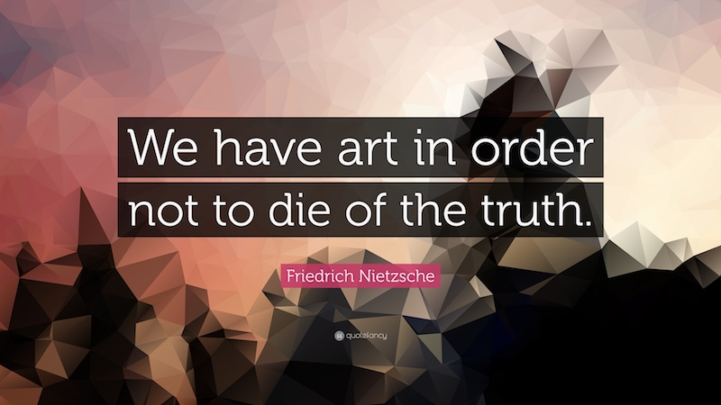

Born
Friedrich Wilhelm Nietzsche 15 October 1844
Röcken, Saxony, Prussia
Died
25 August 1900 (aged 55)
Weimar, Saxe-Weimar-Eisenach, German Empire
Notable ideas
Apollonian and Dionysian; Übermensch; Ressentiment "Will to power" "God is dead" Eternal return Amor fati Herd instinct Tschandala "Last man"
Perspectivis---- 40%
Transvaluate---- 30%
Genealogya---- 20%